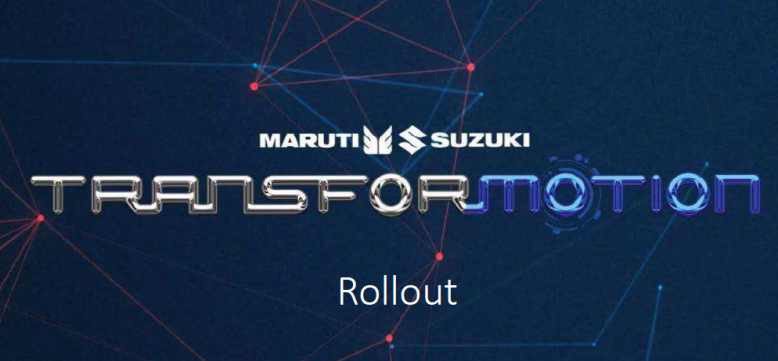
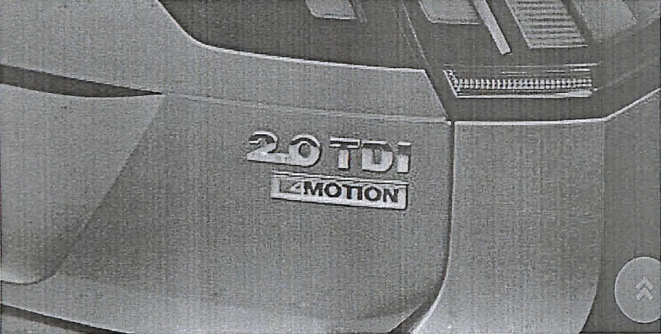

$~
* IN THE HIGH COURT OF DELHI AT NEW DELHI
Reserved on: 20thNovember, 2025 Date of decision:12thMarch, 2026 Date of uploading: As per digital signature + C.A.(COMM.IPD-TM) 30/2024 VOLKSWAGEN AG.....Appellant Through: Mr. Jayant Kumar, and Ms. Ruchi Singh, Advs.
versus
THE REGISTRAR OF TRADE MARKS AND ANR.....Respondents Through: Ms. Saumya Tandon, CGSC with Mr. Gaurav Singh Sengar, Advs. for R-1 Mr. Prashant Gupta and Mr. Jithin M. George, Advs. for R-2 % CORAM:
HON'BLE MS. JUSTICE MANMEET PRITAM SINGH ARORA
JUDGMENT
MANMEET PRITAM SINGH ARORA, J
- The present appeal has been filed against the order dated 13.12.2023 [‘impugned order’] passed by the Respondent No. 1/Registrar of Trade Marks, whereby it dismissed the opposition filed by the Appellant against trademark application no. 2990453 filed by the Respondent No. 2/Maruti Suzuki India Limited for the mark ‘TRANSFORMOTION’ in Class 12.
- Appellant is the owner of the mark ‘4MOTION’ [Appellant’s mark’] registered under trademark registration no. 1388469 in Class 7, 12,28, 35 and 37 on 27.09.2005.
Factual Matrix
- The Respondent No. 2 filed the trademark Application for the mark ‘TRANSFORMOTION’ [‘impugned mark’] in class 12 on 22.06.2015 in respect of vehicles; apparatus for locomotion by land, air or water on a proposed to be used basis. Respondent No. 1 accepted the said application for the impugned mark and advertised the same in the Trade Mark Journal No. 1803 dated 26.06.2017. 3.1 Appellant, upon learning about the advertisement, filed a Notice of Opposition against the impugned mark on 25.10.2017 on the ground of its similarity with the Appellant’s mark. 3.2 Respondent No. 1, vide its impugned order, dismissed the opposition filed by the Appellant and registered the impugned trademark application of the Respondent No. 2.
Submissions by the Appellant
- Learned counsel for the Appellant states that Respondent’s mark is phonetically, visually and conceptually similar with the Appellant’s mark. The rival marks when compared, are deceptively and/or confusingly similar. 4.1 He states that its mark ‘4MOTION’, which is pronouncedas ‘FORMOTION’ is a uniquely coined word and has no dictionary meaning, and the Respondent No. 2 has adopted/copied the Appellant’s mark in entirety and merely added the prefix ‘TRANS’ to it. He states that the addition of the prefix ‘TRANS’ to Appellant’s mark ‘4MOTION’ is inconsequential and does not make it distinctive as ‘FORMOTION’ is also the essential feature of the Appellant’s mark. He relies upon the Supreme Court judgement Kaviraj Pandit Durga Dutt Sharma v. Navratna Pharmaceuticals Laboratories1. 4.2 He states that the sound of the impugned mark ‘TRANSFORMOTION’ is deceptively similar with thesoundof the mark ‘4MOTION’. The sound of the prefix ‘TRANS’ is inconsequential since ‘FORMOTION’ is the dominant part of the impugned mark. He relies on the judgementShree Nath Heritage Liquor Pvt. Ltd v. Allied Blender & Distillers Pvt. Ltd.2, andGreaves Cotton Ltd. v. Mr. Mohammad Rafi & Ors3. 4.3 He states that the Appellant’s mark is an “earlier trademark” which attained registration on 29.03.2008 as against the Respondent No. 2, who filed its trademark application on 22.06.2015 on a proposed to be used basis. Further, a mark which is deceptively similar to an earlier trademark is not liable to be registered. 4.4 He states that the two marks are similar also on account of their semantic resemblance. He refers to the judgments ofShree Nath Heritage (supra), whereby the Court had held the mark ‘COLLECTOR’S CHOICE’ to be deceptively similar with the mark ‘OFFICER’S CHOICE’ and in the case ofVinita Gupta v. Amit Arora4whereby the Court held the mark ‘NUAPPEPLANT’ to be deceptively similar to the mark ‘APPLESTREE’.
Submissions by the Respondent No. 1
- Learned counsel for the Respondent No. 1 states that it is a settled law that a trademark has to be read as a whole and cannot be dissected. Even if 1AIR 1965 SC 980 at paragraph no. 29.
2221(2015) DLT 359(DB) at paragraph nos. 19 and 82. 32011 SCC OnLine Del 2596 at paragraph nos. 16 and 24. 42022 DHC 4060 at paragraph nos. 29,30,39.
the Appellant’s mark ‘4MOTION’ is pronounced as ‘FORMOTION’, it is different from the Respondent No. 2's mark, which is pronounced as ‘TRANSFORMOTION’. The presence of one common element in the competing marks is irrelevant, especially when the final impression produced by the marks is sufficiently distinct from each other. 5.1. She states that the question as to whether the two rival marks are likely to give rise to confusion or not, is a question of first impression. In the impugned mark, the Prefix ‘TRANS’ is the distinguishing feature of the Respondent’s mark and makes the Appellant’s mark visually and phonetically different. 5.2. She states that the resemblance between the two rival marks is to be seen with reference to the ear, as well as, to the eye. It is apparent that the visual appearance is very different. The sound of ‘TRANSFORMOTION' does not resemble with‘4MOTION’. The Appellant’s mark starts with a numeric i.e., ‘4’, and makes it visually different from the Respondent No. 2’s mark. 5.3. She states that the impugned mark is capable enough to distinguish the goods of the Respondent No. 2 from others and there is no likelihood of confusion or association with the Appellant’s goods. Both the conflicting marks must be compared in its entirety and when seen in entirety, they look different, and there exists no likelihood of confusion or deception in the minds of general public or any likelihood of association between the two rival marks.
Submissions by the Respondent No. 2
- Learned counsel for the Respondent No. 2 states that Appellant’s mark ‘4MOTION’consists of a numeral conjoined with the word ‘MOTION’, while Respondent No. 2’s mark ‘TRANSFORMOTION’ is a single word. The first syllable in the Appellant's mark is the numeral ‘4’, whereas, the first syllable in the Respondent No. 2's mark is the word ‘TRANS’. The Appellant cannot be permitted to dissect the Respondent No. 2’s mark and compare a part of the said mark with its own mark and allege similarity of the marks. He refers to the judgement ofF. Hoffman-la Roche & Co. ltd v. Geoffrey Manner & Co. Pvt. Ltd5. 6.1. He states that Appellant’s own documents filed before the Trade Marks Office, states that ‘4MOTION’ is allegedly an intelligent all-wheel drive system or in other words the name of a technology introduced by the Appellant for its automobiles. The Appellant is directly referring ‘4MOTION’ to be the name of its technology, hence, it is using the term in a generic sense, and thus the same does not qualify as a trade mark and deserves to be cancelled. 6.2. He states that the word ‘MOTION’ means “the act or process of moving, or a particular action or movement”. Being synonymous with vehicles and automobile, the same is very commonly used in the automobile industry. A simple search on the website of the Trade Marks Office reveals that there exist several trade marks (both registered and pending) in class 12, filed in relation to automobiles and vehicles, which consist of the word ‘MOTION’6.
6.3. He states that since the word ‘MOTION’ in the two rival marks is commonly used in trade, greater regard should be paid to the uncommon element in the two marks i.e. “4” v. “TRANSFOR”, which are completely different and distinct. In such case, it is virtually impossible for one mark to be mistaken for or confused with the other. He refers to the judgment ofJ.R. Kapoor v. Micronix7. 6.4. He states that as per the Appellant’s own documents, the mark ‘4MOTION’ was introduced in India in 20178.On the other hand, the Respondent No.2 has filed, on record, documents dating back to 20169, which establishes that it had started using the mark ‘TRANSFORMOTION’ in India much prior to the Appellant. Appellant has failed to show any use and/or reputation of its mark ‘4MOTION’either in India or internationally. 6.5. He states that since the Respondent No. 2’s mark stands to be registered, the present appeal is not maintainable and the same is time barred. Findings and Analysis
- This Court has heard the learned counsel for the parties and perused the record.
- The Appellant is the registered proprietor of the mark ‘4MOTION’ (word) under no. 1388469 in classes 7, 12, 28, 35 and 37, with its registration dating back to 27.09.2005. On 25.10.2017, the Appellant filed a Notice of Opposition (bearing no. 905287) against Respondent No.2’s trade mark application no. 2990453 in class 12 (dated 22.06.2015), for the mark ‘TRANSFORMOTION’ (word). By impugned order, the Respondent No.1 71994 Supp (3) SCC 215 at paragraph 6. dismissed the Opposition filed by the Appellant. The Respondent No.2’s trademark application has since proceeded to registration. The present appeal has been filed assailing the Impugned Order on grounds, which can be summarised as under:
- Appellant has raised a ground that, when compared as a whole, Respondent No.2’s mark is phonetically, visually and conceptually similar to Appellant mark; it contends that the mark ‘TRANSFORMOTION’ is deceptively similar with the Appellant’s prior adopted and prior used mark ‘4MOTION’. It contends that the Respondent No. 2’s mark ‘TRANSFORMOTION’ has incorporated the Appellant’s mark ‘4MOTION’ in its entirety. The Appellant contends that the two marks are similaralsoon account of semantic resemblance as the idea of the Appellant behind conceiving the mark ‘4MOTION’ pertains to its technology and Respondent No. 2 has similarly captured this idea to convey about its own technology. On the other hand, Respondent No. 2 has contended that there is no similarity in the two marks, as its mark ‘TRANSFORMOTION’ is a single word, and when compared as a whole with Appellant’s mark ‘4MOTION’, there is no deceptive similarity in its structure. It contends that the rival marks have to be compared as a whole, and the argument of the Appellant wrongly dissects the mark and selectively compares a part of the impugned mark to raise the averment of similarity; also, the plea of semantic resemblance raised by the Appellant in these proceedings was never raised in the opposition proceedings before the Registrar and this plea, therefore, cannot be considered at this stage.
- Appellant states that its mark ‘4MOTION’ should be read and pronounced as ‘FORMOTION’. Respondent No.2 has adopted an identical mark as that of the Appellant and has just added the prefix ‘TRANS’ to it, which is inconsequential. It contends that the addition of the prefix ‘TRANS’ does not makes the impugned mark different from the Appellant’s mark ‘4MOTION’. On the other hand, Respondent No. 2 contends that the word ‘MOTION’ is public juris for the automobile industry and the Appellant herein is seeking to monopolize the said word in these proceedings. The Appellant has relied upon the registrations held by several other proprietors of the mark, which consist of the word ‘MOTION’, to substantiate the plea that the word ‘MOTION’ is commonly used in the automobile industry and is therefore aptly used by the parties in the said industry. It contends that the word ‘MOTION’ in the two rival marks has to therefore be discounted, and the comparison, in part (if at all) should be on the prefix of the rival marks, i.e., ‘4’ versus ‘TRANSFOR’, which is completely different and distinct.
- Appellant contends that its mark is an ‘earlier trade mark’ as its mark ‘4MOTION’ was a registered trademark as on the date of filing of the impugned trademark application by the Respondent No. 2. While, the Respondent No. 2 has contended that the documents placed on record, show that, whereas the Respondent No. 2 started using the mark ‘TRANSFORMOTION’ in 2016, the first use of the mark by the Appellant in India is only of the year 2017; the Appellant has failed to show any reputation whatsoever of its alleged mark ‘4MOTION’ either in India or internationally.
- Appellant has also raised the ground that there is strong likelihood of confusion as Appellant’s goods are already in the market and have acquired reputation. To this, the Respondent No. 2 contends that there is no question of any confusion or deception amongst the members of the public and trade by the use of the mark TRANSFORMOTION’, as Respondent No.2 started using its mark much prior to the Appellant's trademark.
- The Respondent No. 1 has opposed the appeal and relies upon the findings returned by the Registrar, at paragraphs 8 and 9 of the impugned order, which reads as under:
- I have heard the arguments of the parties and perused the documents on record.
The Hon'ble Supreme Court in Corn Products vs Shangrila Food
ProductsLtd. AIR 1960 SC 142 has held that 'in deciding the question of similarity between two marks; the marks have to be considered as a whole. It is not right to take apart the word and compare it with the part of the other words: one word must be considered as a whole and compared with the word as a whole.' It is settled law that a mark has to be read as a whole and cannot be dissected. If we look at the marks of the parties, the applicant's mark is 'TRANSFORMOTION', whereas the Opponent's mark is '4MOTION'. The mark of the applicant cannot be dissected into 'TRANS' and 'FORMOTION'. The opponent has argued that the opponent's mark is phonetically pronounced as 'FORMOTION', hence both the marks are phonetically similar. I am of the opinion that even if the opponent's mark is pronounced as 'FORMOTION', it is different from the applicant's mark, which is pronounced as 'TRANSFORMOTION'. The presence of one common element in the competing marks is irrelevant, especially when the final impression produced by the marks is sufficiently distinct from each other. The question that whether the two marks are likely to give rise to confusion or not, is a question of first impression and if we see the impugned mark, the Prefix 'TRANS' is the distinguishing feature of the applicant's mark and makes the applicant's mark visually and phonetically different from the opponent's mark. The Resemblance between the two rival marks is to be seen with reference to the ear as well as to the eye. The sound of 'TRANSFORMOTION' does not resemble '4MOTION'. It is apparent that the visual appearance is very different. The opponent's mark starts with numeric '4' and makes it very different visually from the applicant's mark. Thus, on the whole it can be said that both the rival marks visually look very dissimilar and phonetically they both sound different too. On first impression, the dissimilarity appears to be clear and more striking to the naked eye and ears, than any similarity between the part of the mark.
- The impugned mark is capable to distinguish the goods of the applicant from others and there is no likelihood of confusion or association with the opponent. Both the conflicting marks must be compared in its entirety and when seen in entirety, they look different and there exists no likelihood of confusion or deception in the minds of general public or any likelihood of association between the mark of the opponent and the applicant's mark. Overall the applicant's mark is visually, structurally and phonetically different from the Opponent's mark. Thus in view of the reasons given above, I deem it fit to dismiss the instant Opposition and accept the Present Application for registration without going into further merits of the case.”
Respondent No. 1 contends that the Respondent No. 2’s mark ‘TRANSFORMOTION’ is distinctive and has been rightly registered.
- The rival marks in question are ‘4MOTION’ and ‘TRANSFORMOTION’.
- As per the Appellant’s documents10‘4MOTION’ is an intelligent AWD system and is based on the modern MQB (modular transverse matrix) platform. The document further states that ‘4MOTION’ is the name of a smart four-wheel transfer system that actively monitors a car’s journey, which is aimed at giving the user the best traction, as it controls and corrects the amount of torque transfer, based on the road condition. The use of the word ‘4MOTION’ is not only available in the brochures of the Appellant but is also applied on its car, which is sold under the brand-name/model-name Tiguan and the House mark of the Appellant is Volkswagen.
- The Respondent No. 2, in contrast, issuing the mark ‘TRANSFORMOTION’ as a title of its promotion/advertisement campaign. It is stated that ‘TRANSFORMOTION’ is used as an advertisement campaign to communicate transition of technology which is aimed at making vehicles more convenient, enjoyable and fuel-efficient, while also being environmentally conscious. It was submitted during arguments that, ‘TRANSFORMOTION’ is used to convey to the consumers that, the speedometers in its vehicles are moving from analogue to digital systems. The Respondent No. 2 has also stated that its mark ‘TRANSFORMOTION’ is derived from the English wordtransformation and is a wordplay with the intention to signify the change of technology.
- The Respondent No. 2 has contended that the word ‘MOTION’ is common to the automobile industry and has placed on record details of other marks registered or pending registration, which includes the said word11. The Appellant has baldly disputed the said submission of the Respondent No. 2, though, there is no dispute raised to the details of the third-party trademarks relied upon by the Respondent No. 2 to show the use of the word ‘MOTION’ as a part of the said third-party marks. This Court even otherwise, finds merit in the submission of the Respondent No. 2 that the word ‘MOTION’ would be common to the automobile industry in which both the parties operate and is, therefore, descriptive in its use in the rival marks. Even on facts, both the parties have used the word ‘MOTION’ in their rival marks in a generic manner to denote the (use of) technology for their vehicles. Therefore, the law settled by the Supreme Court inF. Hoffman-La Roche& Co. Ltd (supra)12and J. R. Kapoor v. Micronix India(supra)13relied upon by Respondent No. 2 would be apposite for comparing the rival marks. Accordingly, the word ‘MOTION’ as it appears in both the marks cannot be decisive. The rival marks would have to be compared as a whole and only the uncommon part of the marks would have to be considered for determining if there is any similarity, in the rival marks.
- Keeping in view of the said principle of law, on a comparison of the Appellant's mark ‘4MOTION’ with Respondent No. 2’s whole mark ‘TRANSFORMOTION’, this Court is satisfied that from a visual overlook, there is no plausible chance of confusion between the two rival marks because they are different from one another. This Court has also perused the documents placed on record by the Respondent No. 2 with respect to its advertisement campaign and the stylised manner used by it for the impugned mark ‘TRANSFORMOTION’/

in the advertisement campaign. When compared, with the stylised manner in which ‘4MOTION’/

is applied by the Appellant to its goods, also shows that there is no visual similarity.
- With respect to phonetic similarity, the Appellant has contended that ‘4MOTION’ is pronounced as ‘FORMOTION’. This Court is of the opinion that the finding returned in the impugned order, at paragraph 8, opining that the Appellant’s pronunciation of its mark‘4MOTION’ is not phonetically similar to Respondent No. 2’s mark ‘TRANSFORMOTION’ is correct, as the pronunciation of the word ‘TRANS’ in the Respondent’s mark ‘TRANSFORMOTION’, sufficiently makes the Respondent No. 2’s mark distinct. Also, in the facts of this case, the reliance placed by the Respondent No. 2 onCadilla Laboratories Ltd. v. Dabur India Ltd.14(supra) is also apposite as the prefix of the rival marks will become significant in view of the suffix ‘MOTION’ being common to both the rival marks. The Respondent No. 2’s mark starts with alphabets while the Appellant’s mark starts with a numerical ‘4’, which is a stark difference between the two marks. The prefix ‘TRANS’ in Respondent No. 2’s mark ‘TRANSFORMOTION’, when compared with the prefix ‘4’ in the Appellant's mark ‘4MOTION’, leads to distinct pronunciation which in the considered opinion of this Court, does not lead to any likelihood of confusion in the said marks.
- The Appellant has sought to invoke the dominant feature test to contend that Respondent No. 2’s mark be dissected to opine that the impugned mark absorbs the entire mark ‘4MOTION’. However, this Court is unable to accept this submission as the impugned mark ‘TRANSFORMOTION’ commends to the mind of the Court as a single word and there is no inclination to split up the said mark/word and read it as ‘TRANS’ and ‘FORMOTION’ separately, as suggested by the Appellant.
- With respect to the submission of the Appellant that there is conceptual/semantic similarity in the Appellant’s mark, this Court finds merit in the submission of the Respondent No. 2that no such plea was raised by the Appellant in the notice of opposition, before the Registrar. It is precluded from raising such a plea before this Court. Notwithstanding this conclusion, this Court even otherwise does not find any merit in the said submission, as the concept of the Appellant’s ‘4MOTION’ is used in relation to its existing technology applied to the vehicle, so as to denote a feature of its vehicle, Volkswagen Tiguan, whereas Respondent No. 2 has used the expression ‘TRANSFORMOTION’ as a part of an advertising campaign to convey a transition in its use of technology as discussed above. Accordingly, this Court finds no merit in the submission of semantic similarity by the Appellant. In the considered opinion of this Court, the impugned mark ‘TRANSFORMOTION’ brings the idea/thought oftransformationto one’s mind and the submission of the Respondent No. 2 that it is a wordplay of the dictionary wordtransformationto convey to its consumer the transition of technology from analogue to digital, for its vehicles, appears reasonable. The thought that, therefore, comes to the mind is transformationor transition of the technology used by Respondent No. 2.
- This Court, therefore, finds that the finding of Respondent No. 1 in the impugned order that the impugned mark is distinctive and not deceptively similar to the mark of the Appellant is correct. In view of this finding, the submission of the Appellant that its mark is the ‘earlier trademark’ is not relevant.
- This Court also finds that the Appellant herein is Volkswagen AG, and Respondent No. 2 herein is Maruti Suzuki India Limited; both companies have independent, substantial goodwill in the Indian market and, considering the class of products sold by the parties are cars, which are purchased by consumers after due deliberations, this Court is persuaded to hold that there is no material on record to conclude that the consumers would be confused or misled to purchase the goods of the Respondent No. 2 under mistaken belief that the same actually belongs to the Appellant. The Appellant has also failed to bring on record any evidence showing confusion. It is also not disputed that the use of the impugned mark by Respondent No. 2 for its advertisement campaign in 2016 predates the Appellant’s use of its mark for its goods only in 2017. Thus, as a matter of fact the customers were not even aware of the Appellant’s mark when the Respondent No. 2 commenced use of the impugned mark. This ground of alleged confusion raised by the Appellant is therefore, not based on actual consumer confusion. Also, in view of the finding of this Court, that there is no deceptive similarity in the marks, the plea of likelihood of confusion is without any merits.
- The Respondent No. 2 has filed a short note dated 17.11.2025 distinguishing the judgments relied upon by the Appellant. The judgments relied upon by the Appellant are not applicable in view of the findings returned by this Court on the issue of absence of deceptive similarity between the two rival marks.
- In its submissions, the Respondent No. 2 has raised the plea that the appeal is time barred, however, this Court finds that the delay in filing the appeal already stands condoned vide order dated 03.05.2024, which has attained finality.
- In addition, Respondent No. 2 has also raised a plea in its submissions that the present appeal filed under Section 91 of the Trade Marks Act 1999, is not maintainable. However, the said plea was not pressed upon during arguments.
- Accordingly, the present appeal is without any merit and the same is dismissed.
MANMEET PRITAM SINGH ARORA (JUDGE) MARCH 12, 2026/hp/IB/msh
Citations
- 6At page back
- 5of the additional documents filed by the Respondent No. 2. back
- 8At page 130 of the paper book back
- 9From page 255 to 262 of the paper book back
- 10At page 125 of the documents filed by the Appellant. back
- 11At page 5 of the additional documents filed by the Respondent No. 2. back
- 12At paragraph no. 8 back
- 13At paragraph no. 6 back
- 14At paragraph no. 7. back